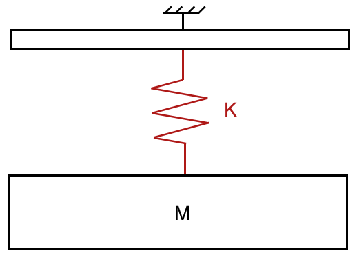

Mass-spring system
Choose the number of mass and spring, enter variable and look how the system moves
Mass spring system
The objective of this system is to observe the oscillations. As you may see, you can change the variable below. Please fill up the blank.
Number of spring
:
Constant of steepness of the srping
:
Gravity
:
Weight
:
